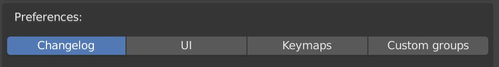

Preferences

This is where you can find a few settings, which will change the way you work with the addon.
Changelog
This is where the most important parts of the changelog for the newest version are located.
UI
Reverse Layer Order
This option will reverse the order the layers are displayed in and also reverse the move up and down buttons, to match the layer order.
Move Over Closed Group
When you move a layer towards a closed group and this option is enabled, instead of moving in the group, it will treat the whole group as a single layer and move past it.
Keymaps
HDRI Rotation Shortcut
This option will disable the ability to rotate the background image in the viewport with your mouse. Here you can also set the shortcut that will start the modal.
Custom Groups
The folder path you specify here should lead to a folder, which has your custom assets. These will get imported when you activate the addon in a file. You can also import them with an operator.
Blend Files These should have your custom node groups in them. The name of the files themselves does not matter, it's just the names of the node groups in your files which will matter.
Thumbnails If you have a folder called thumbnails in your specified folder, the thumbnails located in that folder will be imported into your files. These should match the names of the node groups in your .blend files.
You can find more information on this here.